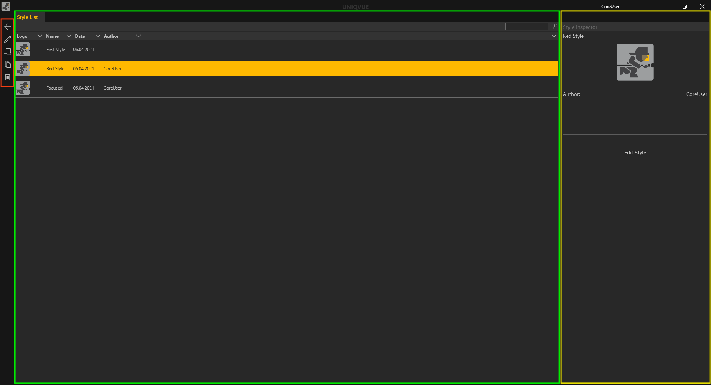

Styles

Die Style List
Das Style List Fenster unterteilt sich in drei Bereiche. Ganz Links befinden sich die allgemeinen Bedienelemente. In der Mitte befindet sich das Hauptfenster mit der Listenansicht der Styles. Rechts daneben befindet sich der Style Inspector.
Die Session List ist in mehrere Spalten unterteilt. Jede Spalte repräsentiert dabei eine allgemeine Eigenschaft des Styles. Styles können durch Klicken auf die jeweilige Eigenschaft in der Kopfzeile der Liste sortiert werden.
-
Logo - Logo eines Styles. Dieser kann nicht geändert werden. (?)
-
Name - Name des Styles. Durch Doppelklick kann dieser geändert werden.
-
Date - Beim Erstellen eines Styles wird automatisch das aktuelle Datum vergeben. Das hilft die Styles nach Datum zu sortieren und wiederzufinden.
-
Author - Automatisch wird hier die Person mit ihrem Username eingetragen.
Initial befindet sich in der Style List der Eintrag ‘First Style’. Dieser ist an die Konfiguration ihres Setups und der Corporate Identity ihres Unternehmens angepasst.
Der Style Inspector auf der rechten Seite zeigt das Logo etwas größer.
Mit dem ‘Edit Style’ Button gelangt man in die Bearbeitungsebene des Styles. Einen detaillierten Einstieg gibt es in Kapitel Session Worfklow.